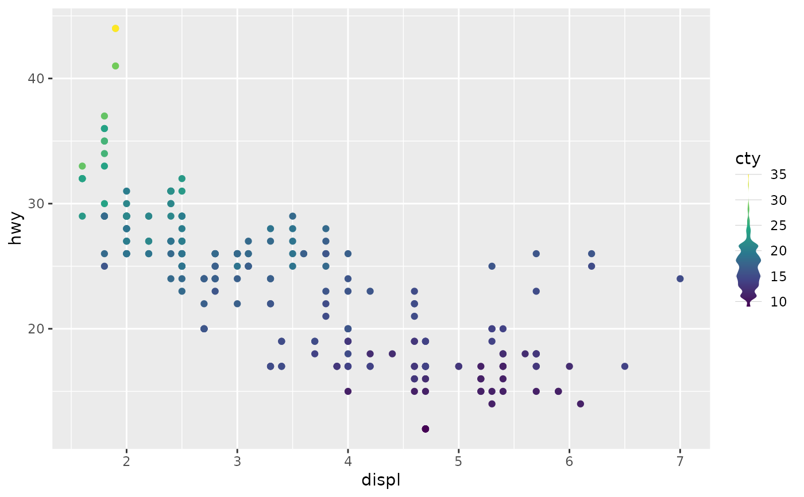
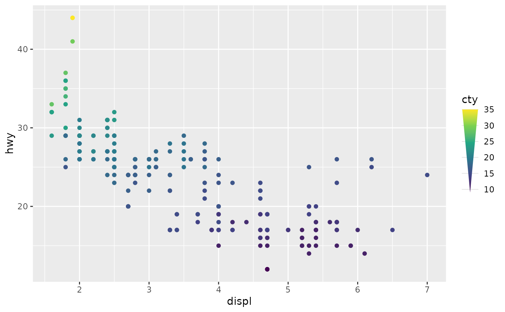
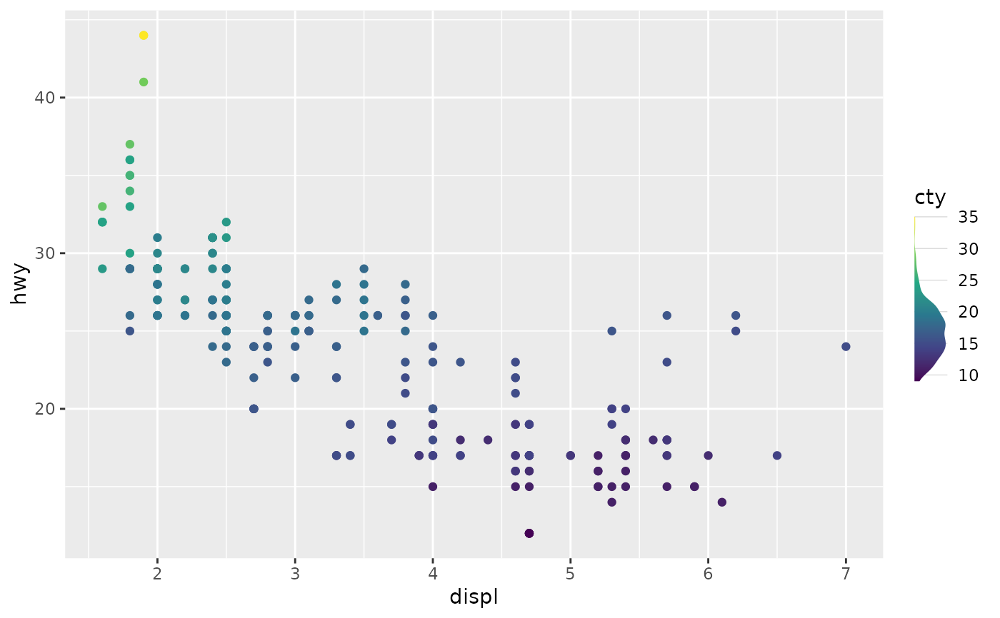
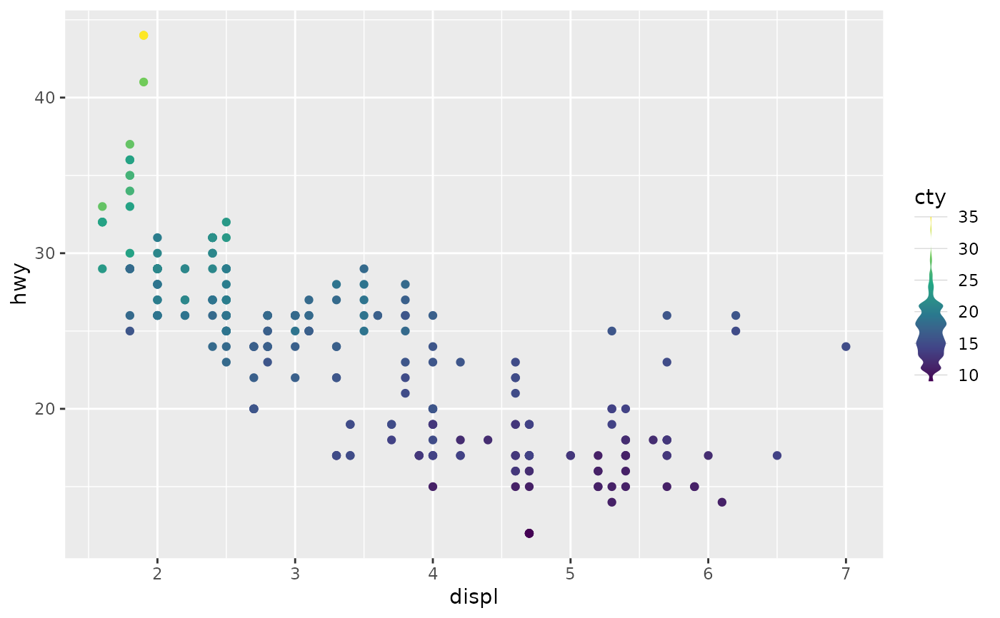
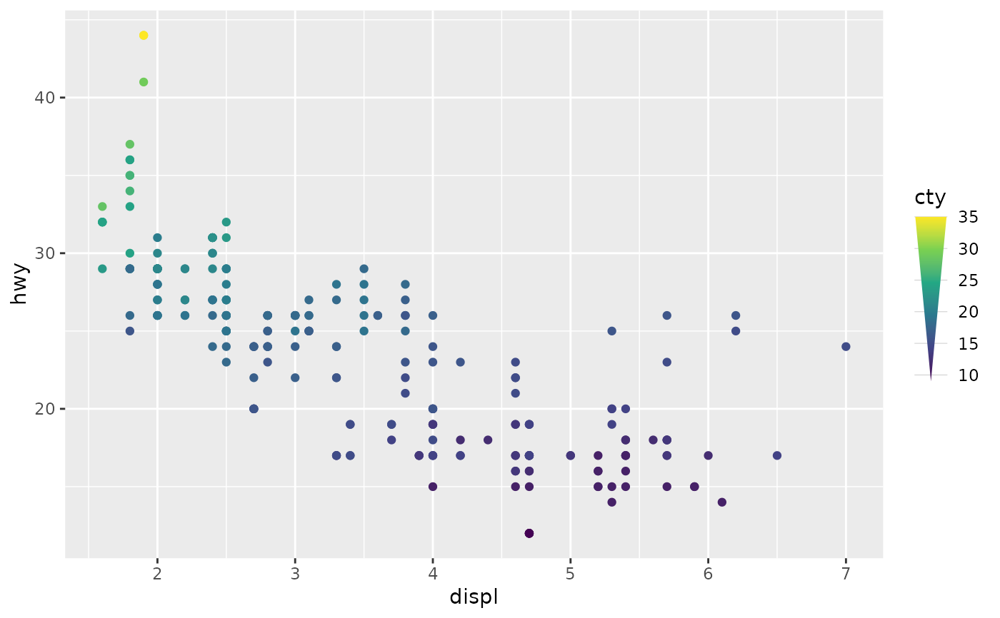
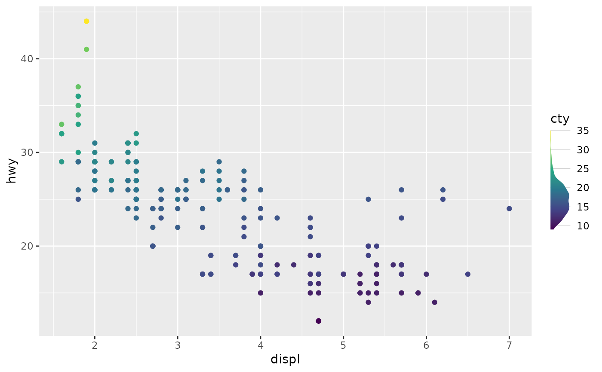

Violin colour guide
guide_colour_violin.RdLike regular colour bar guides, this violin guide also shows continuous colour scales mapped to values. In addition, the width of this guide can vary. This varying width can be used to display densities like a violin plot.
Usage
guide_colour_violin(
density = list(),
just = 0.5,
ticks = element_line("grey80"),
ticks.length = unit(c(0, 1), "npc"),
ticks.ontop = FALSE,
...
)Arguments
- density
One of the following:
A named
listwithxandyelements, such as one returned by thedensity()function. Thexandyelements should be of equal length and at least length 2. Infinite values forxwill be set to the scale's limits.A
numericvector, which will be forwarded to thedensity()function with default arguments.
- just
A
numeric(1)in the [0, 1] range to determine the alignment of the violin. A value of0sets left- or bottom-alignment, whereas a value of1sets right- or top-alignment. A value of0.5(default) aligns the violin in the middle.- ticks
A theme object for rendering tick marks at the colourbar. Usually, the object of
element_line()is expected (default). Ifelement_blank(), no tick marks are drawn. For backward compatibility, can also be a logical which translatesTRUEtoelement_line()andFALSEtoelement_blank().- ticks.length
A numeric or a
grid::unit()object specifying the length of tick marks at the colourbar.- ticks.ontop
A
logical(1)whether to draw the ticks op top of the violin (TRUE) or underneath the violin (FALSE, default).- ...
Arguments passed on to
ggplot2::guide_colourbartitleA character string or expression indicating a title of guide. If
NULL, the title is not shown. By default (waiver()), the name of the scale object or the name specified inlabs()is used for the title.title.positionA character string indicating the position of a title. One of "top" (default for a vertical guide), "bottom", "left" (default for a horizontal guide), or "right."
title.themeA theme object for rendering the title text. Usually the object of
element_text()is expected. By default, the theme is specified bylegend.titleintheme()or theme.title.hjustA number specifying horizontal justification of the title text.
title.vjustA number specifying vertical justification of the title text.
labellogical. If
TRUEthen the labels are drawn. IfFALSEthen the labels are invisible.label.positionA character string indicating the position of a label. One of "top", "bottom" (default for horizontal guide), "left", or "right" (default for vertical guide).
label.themeA theme object for rendering the label text. Usually the object of
element_text()is expected. By default, the theme is specified bylegend.textintheme().label.hjustA numeric specifying horizontal justification of the label text. The default for standard text is 0 (left-aligned) and 1 (right-aligned) for expressions.
label.vjustA numeric specifying vertical justification of the label text.
barwidthA numeric or a
grid::unit()object specifying the width of the colourbar. Default value islegend.key.widthorlegend.key.sizeintheme()or theme.barheightA numeric or a
grid::unit()object specifying the height of the colourbar. Default value islegend.key.heightorlegend.key.sizeintheme()or theme.nbinA numeric specifying the number of bins for drawing the colourbar. A smoother colourbar results from a larger value.
rasterA logical. If
TRUEthen the colourbar is rendered as a raster object. IfFALSEthen the colourbar is rendered as a set of rectangles. Note that not all graphics devices are capable of rendering raster image.frameA theme object for rendering a frame drawn around the bar. Usually, the object of
element_rect()is expected. Ifelement_blank()(default), no frame is drawn.frame.colourA string specifying the colour of the frame drawn around the bar. For backward compatibility, if this argument is not
NULL, theframeargument will be set toelement_rect().frame.linewidthA numeric specifying the width of the frame drawn around the bar in millimetres.
frame.linetypeA numeric specifying the linetype of the frame drawn around the bar.
ticks.colourA string specifying the colour of the tick marks.
ticks.linewidthA numeric specifying the width of the tick marks in millimetres.
draw.ulimA logical specifying if the upper limit tick marks should be visible.
draw.llimA logical specifying if the lower limit tick marks should be visible.
directionA character string indicating the direction of the guide. One of "horizontal" or "vertical."
default.unitA character string indicating
grid::unit()forbarwidthandbarheight.reverselogical. If
TRUEthe colourbar is reversed. By default, the highest value is on the top and the lowest value is on the bottomorderpositive integer less than 99 that specifies the order of this guide among multiple guides. This controls the order in which multiple guides are displayed, not the contents of the guide itself. If 0 (default), the order is determined by a secret algorithm.
available_aesA vector of character strings listing the aesthetics for which a colourbar can be drawn.
Value
A <Guide> ggproto object that can be given to the
guides() function, or set as the guide argument
in a colour or fill scale.
See also
Other colour bar variants:
guide_colour_histogram(),
guide_colourbar_cap()
Examples
# A standard plot with continuous colour scale
p <- ggplot(mpg, aes(displ, hwy)) +
geom_point(aes(colour = cty)) +
scale_colour_viridis_c()
# The guide can be given a variable of which to calculate density
p + guides(colour = guide_colour_violin(mpg$cty))
 # You can also pass the result of `density()` for greater control
p + guides(colour = guide_colour_violin(density(mpg$cty, adjust = 0.5)))

# Alternatively, you can also pass a list manually
p + guides(
colour = guide_colour_violin(density = list(x = c(-Inf, Inf), y = c(0, 1)))
)

# The `just` argument can be used to align the density elsewhere
p + guides(colour = guide_colour_violin(mpg$cty, just = 0))

# You can also pass the result of `density()` for greater control
p + guides(colour = guide_colour_violin(density(mpg$cty, adjust = 0.5)))

# Alternatively, you can also pass a list manually
p + guides(
colour = guide_colour_violin(density = list(x = c(-Inf, Inf), y = c(0, 1)))
)

# The `just` argument can be used to align the density elsewhere
p + guides(colour = guide_colour_violin(mpg$cty, just = 0))
